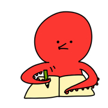

ご紹介

技術系メーカーからオンライン家庭教師
平岡と申します。普段はオンライン家庭教師をしながら地域の子ども向けに探求学習支援に携わっています。前職までは技術系メーカーで開発品の解析計算をしていました。モデリングソフトやエクセルで表計算のマクロを作りながら進めていましたが、20代半ばで全くの畑違いの職種についたので学習面で苦労しました。
今は退職して数年経っていますが、教育方面で起業して教材制作やオンライン家庭教師、地域の教育事業に携わっています。
簡単な経歴
- 2010年：愛媛大学農学部 もやしもんブームでバイオ系に進む 入学と同時に家庭教師のバイトを始める
- 2013年：就活中に教育関係に行きたいと自覚したけれど時すでに遅しで、なんなとなく地元の事務職に採用が決まる
- 2014年：就職 とってもブラックだったので年末に退職
- 2015年：大手化学系のところに検査員として派遣で向かう 生物相手のものは農学部時代で懲りる
- 2016年：派遣は1年でやめて自動車部品メーカーに正社員として勤める
- 2017年：電磁気学分野を勉強する、大変だけど充実してた
- クラウドワークスでライティング案件を始めた頃
- 2018年：解析の正確性を上げるためにトライアンドエラーする 知識と経験の点と点が徐々につながる瞬間が徐々に出てきた
- ココナラで自分でライティングの案件をとっていく
- 2019年：なんとか7割以上の正確性を引き上げることに成功 自分の中でかなり達成感
- 結婚しまして今後の生き方を考える
- 2020年：コロナ到来で考えた結果退職することに
- 2021年：大学からずっとやっていた家庭教師業で開業する
- 2022年：完全にオンライン家庭教師になる 教材を作る
- 2023年：現在に至る
制作物
※準備中※